# install CRAN packages
pkg_install = c("ggplot2", "tibble", "tidyr", "forcats", "purrr", "prismatic", "corrr",
"cowplot", "ggforce", "ggrepel", "ggridges", "ggsci", "ggtext", "ggthemes",
"grid", "gridExtra", "patchwork", "rcartocolor", "scico", "showtext",
"shiny", "plotly", "highcharter", "echarts4r")
install.packages(pkg_install)0 Preparation
The following packages need to be installed:
In which:
-
ggplot2: part of thetidyverse; -
tidyverse:-
tibble: mordern data frames; -
dplyr: data wrangling; -
tidyr: data cleaning; -
forcats: handling factors;
-
-
corrr: correlation matrices; -
cowplot: composing ggplots; -
ggforce: sina plots and other cool stuffs; -
ggrepel: nice text labeling; -
ggridges: rigde plots; -
ggsci: nice color palettes; -
ggtext: advanced text rendering; -
ggthemes: additional themes; -
grid: creating graphical objects; -
gridExtra: additional functions forgridgraphics; -
patchwork: multiple panel plots; -
prismatic: minipulating colors; -
rcartocolor: great color palettes; -
scico: perceptional uniform palettes; -
showtext: custom fonts; -
shiny: interactive applications; -
charter,echarts4r,ggiraph,highcharter,plotly: interactive visualization.
We also need to install devtools:
1 The Dataset
I was using the dataset: “National Morbidity and Mortality Air Pollution Study (NMMAPS)”
Install the readr first:
1.1 Import data
The :: here call the namespace and can be used to access a function without loading the package.
Rows: 1461 Columns: 10
── Column specification ────────────────────────────────────────────────────────
Delimiter: ","
chr (3): city, season, month
dbl (6): temp, o3, dewpoint, pm10, yday, year
date (1): date
ℹ Use `spec()` to retrieve the full column specification for this data.
ℹ Specify the column types or set `show_col_types = FALSE` to quiet this message.view some data:
Rows: 1,461
Columns: 10
$ city <chr> "chic", "chic", "chic", "chic", "chic", "chic", "chic", "chic…
$ date <date> 1997-01-01, 1997-01-02, 1997-01-03, 1997-01-04, 1997-01-05, …
$ temp <dbl> 36.0, 45.0, 40.0, 51.5, 27.0, 17.0, 16.0, 19.0, 26.0, 16.0, 1…
$ o3 <dbl> 5.659256, 5.525417, 6.288548, 7.537758, 20.760798, 14.940874,…
$ dewpoint <dbl> 37.500, 47.250, 38.000, 45.500, 11.250, 5.750, 7.000, 17.750,…
$ pm10 <dbl> 13.052268, 41.948600, 27.041751, 25.072573, 15.343121, 9.3646…
$ season <chr> "Winter", "Winter", "Winter", "Winter", "Winter", "Winter", "…
$ yday <dbl> 1, 2, 3, 4, 5, 6, 7, 8, 9, 10, 11, 12, 13, 14, 15, 16, 17, 18…
$ month <chr> "Jan", "Jan", "Jan", "Jan", "Jan", "Jan", "Jan", "Jan", "Jan"…
$ year <dbl> 1997, 1997, 1997, 1997, 1997, 1997, 1997, 1997, 1997, 1997, 1…# A tibble: 10 × 10
city date temp o3 dewpoint pm10 season yday month year
<chr> <date> <dbl> <dbl> <dbl> <dbl> <chr> <dbl> <chr> <dbl>
1 chic 1997-01-01 36 5.66 37.5 13.1 Winter 1 Jan 1997
2 chic 1997-01-02 45 5.53 47.2 41.9 Winter 2 Jan 1997
3 chic 1997-01-03 40 6.29 38 27.0 Winter 3 Jan 1997
4 chic 1997-01-04 51.5 7.54 45.5 25.1 Winter 4 Jan 1997
5 chic 1997-01-05 27 20.8 11.2 15.3 Winter 5 Jan 1997
6 chic 1997-01-06 17 14.9 5.75 9.36 Winter 6 Jan 1997
7 chic 1997-01-07 16 11.9 7 20.2 Winter 7 Jan 1997
8 chic 1997-01-08 19 8.68 17.8 33.1 Winter 8 Jan 1997
9 chic 1997-01-09 26 13.4 24 12.1 Winter 9 Jan 1997
10 chic 1997-01-10 16 10.4 5.38 24.8 Winter 10 Jan 19973 The {ggplot2} package
A ggplot is built up from a few basic elements:
- Data;
-
Geometries
geom_: the geometric shape (hình dạng) that will represent the data; -
Aesthetics
aes_: aesthetics (thẩm mỹ) of the geometric or statistical objects, such as postition, color, size, shape, and transparency; -
Scales
scale_: map between the data and the aesthetics dimensions (ánh xạ từ dữ liệu đến đồ thị), such as data range to plot width or factor values to colors; -
Statistical transformations
stat_: statistical summaries (thống kê) of data, such as quantitles, fitted curves, and sums; -
Coordinate system
coord_: the transformation used for mapping data coordinates into the plane of the data rectangles (hệ tọa độ); -
Facets
facet_: the arrangement of the data into a grid of plots; -
Visual themes
theme(): the overall visual defaults of a plot, such as background, grids, axes, default typeface, sizes and colors (tông).
Each of above elements can be ignored, but can be also called multiple times.
4 A default ggplot
Load the package for ability to use the functionality:
A default ggplot needs three things that you have to specify: the data, aesthetics, and a geometry.:
starting to define a plot by using
ggplot(data = df);if we want to plot (in most cases) 2 variables, we must add positional aesthetics
aes(x = var1, y = var2);
Notice that data was mentioned outside the scope of aes(), while variables are being mentioned inside aes().
For instance:
Just a blank panel, because ggplot2 does not know how we plot data ~ we still need to provide geometry. ggplot2 allows use to store the ggobject to a variable inside the environment - in this case, g - which can be extended later on (by adding more layers). We can print out the plot to the R interactive but putting all inside the ().
We have different geometries to use (called geoms because each function usually starts with geom_). For e.g., if we want to plot a scatter plot.
also a line plot which our managers always like:
cool but the plot does not look optimal, we can also using mutiple layers of geometry, where the magic and fun start.
4.1 Change properties of geometries
Turn all points to large fire-red diamonds:
Note
ggplot2can unsderstand when we usecolor,colour, as well ascol;We can use the default color or hex, or even RGB/RGBA with
rgb(). For example:


4.1 Replacing the default ggplot2 theme
Calling eg theme_bw() using theme_set(), all following plots will have same blank’n’white theme.
theme() is also a useful function to modify all kinds of theme elements (texts, rectangles, and lines).
5 Axes
5.1 Change axis titles
Use labs() to assign character string for each lable.
ggplot(chic, aes(x = date, y = temp)) +
geom_point(color = 'firebrick') +
labs(x = 'Year', y = 'Temperature (°F)')Can also using xlab() and ylab():
ggplot(chic, aes(x = date, y = temp)) +
geom_point(color = "firebrick") +
xlab("Year") +
ylab("Temperature (°F)")
Not only the degree symbol before F, but also the supper script:
5.2 Increase space between axis and axis titles.
Overwrite the default element_text() within the theme() call:
ggplot(chic, aes(x = date, y = temp)) +
geom_point(color = 'firebrick') +
labs(x = 'Year', y = 'Temperature (°F)') +
theme(axis.title.x = element_text(vjust = 0, size = 30),
axis.title.y = element_text(vjust = 2, size = 30))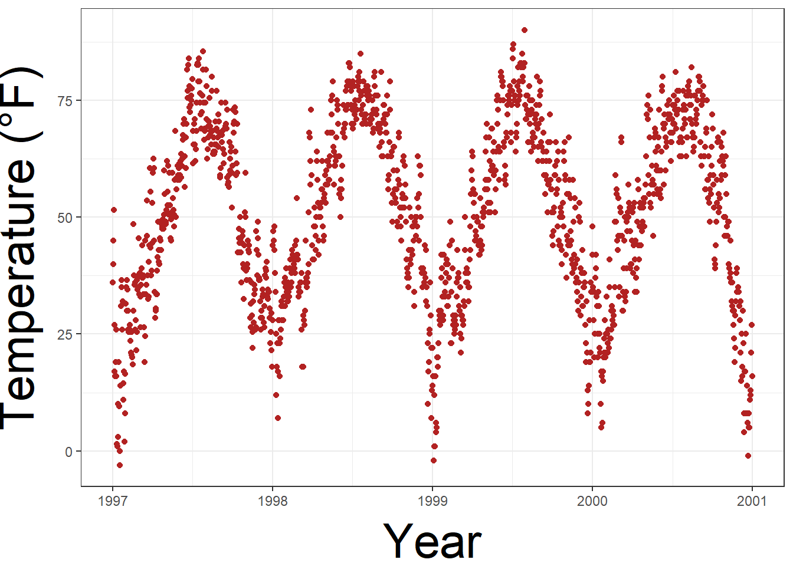
vjust refer to vertical alignment. We can also change the distance by specifying the margin of both text elements.
ggplot(chic, aes(x = date, y = temp)) +
geom_point(color = "firebrick") +
labs(x = "Year", y = "Temperature (°F)") +
theme(axis.title.x = element_text(margin = margin(t = 10), size = 15),
axis.title.y = element_text(margin = margin(r = 10), size = 15))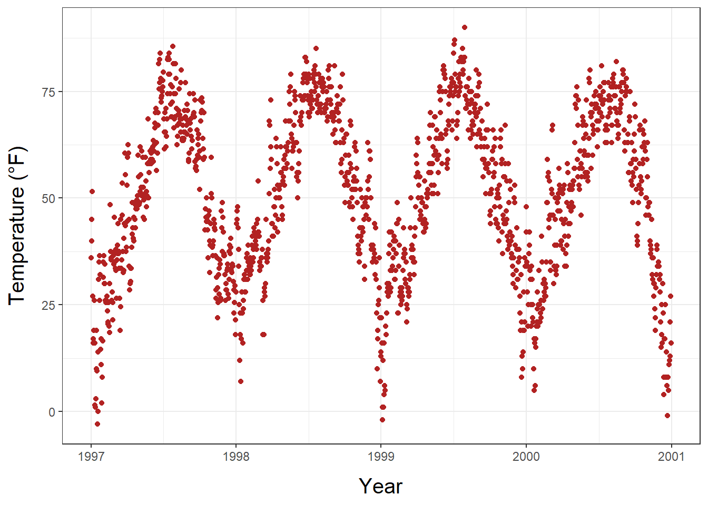
r and t in the margin are top and right. Margin has 4 arguments: margin(t, r, b, l). A good way to remember the order of the margin sides is “t-r-ou-b-l-e”.
5.3 Change aesthetics of the axis titles
Again, we use theme() function and modify the axis.tile and/or the subordinated elements axis.tile.x and axis.tile.y . Within element_text() we can modify the default of size, color, and face.
ggplot(chic, aes(x = date, y = temp)) +
geom_point(color = "firebrick") +
labs(x = "Year", y = "Temperature (°F)") +
theme(axis.title = element_text(size = 15, color = "firebrick",
face = "italic"))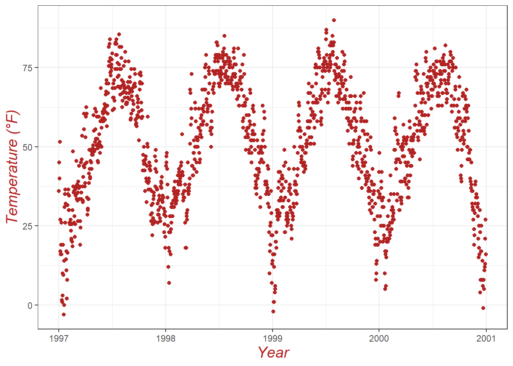
the face argument can be used to make the font bold, italic, or even bold.italic.
ggplot(chic, aes(x = date, y = temp)) +
geom_point(color = "firebrick") +
labs(x = "Year", y = "Temperature (°F)") +
theme(axis.title.x = element_text(color = "sienna", size = 15, face = 'bold'),
axis.title.y = element_text(color = "orangered", size = 15, face = 'bold.italic'))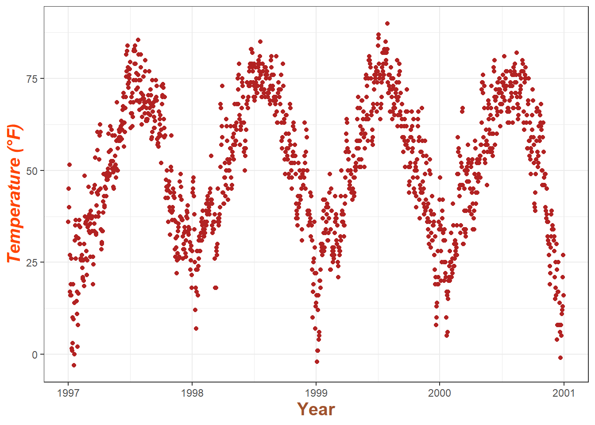
You could also use a combination of axis.title and axis.title.y, since axis.title.x inherits the values from axis.title. Eg:
ggplot(chic, aes(x = date, y = temp)) +
geom_point(color = "firebrick") +
labs(x = "Year", y = "Temperature (°F)") +
theme(axis.title = element_text(color = "sienna", size = 15),
axis.title.y = element_text(color = "orangered", size = 15))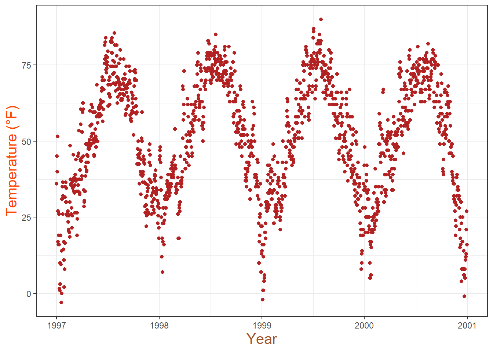
One can modify some properties for both axis titles and other only for one or properties for each on its own:
5.4 Change aesthetics of axis text
Similar to the title, we can change the appearance of the axis text (number indeed) by using axis.text and/or the subordinated elements axis.text.x and axis.text.y.
5.5 Rotate axis text
Specifying an angle help us to rotate any text elements. With hjust and vjust we can adjust the position of text afterwards horizontally (0 = left, 1 = right), and vertically (0 = top, 1 = bottom).
5.6 Remove axis text & ticks
Rarely a reason to do this but this is how it works.
ggplot(chic, aes(x = date, y = temp)) +
geom_point(color = "firebrick") +
labs(x = "Year", y = "Temperature (°F)") +
theme(axis.ticks.y = element_blank(),
axis.text.y = element_blank())
If you want to get rid of a theme element, the element is always element_blank.
5.7 Remove Axis Titles
We could again use element_blank() but it is way simpler to just remove the label in the labs() (or xlab()) call:

Note that NULL removes the element (similarly to element_blank()) while empty quotes "" will keep the spacing for the axis title and simply print nothing.
5.8 Limit axis range
Some time you want to take a closer look at some range of you data. You can do this without subsetting your data:
ggplot(chic, aes(x = date, y = temp)) +
geom_point(color = "firebrick") +
labs(x = "Year", y = "Temperature (°F)") +
ylim(c(0, 50))Warning: Removed 777 rows containing missing values or values outside the scale range
(`geom_point()`).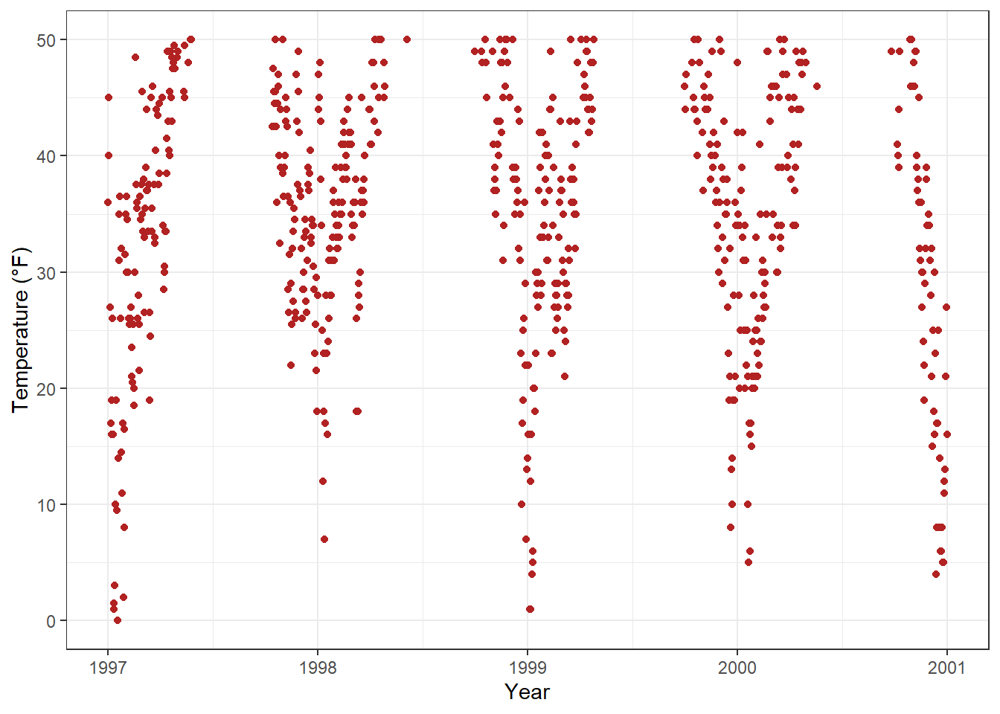
Alternatively you can use scale_y_continuous(limits = c(0, 50)) (subset) or coord_cartesian(ylim = c(0, 50)). The former removes all data points outside the range while the second adjusts the visible area (zooming) and is similar to ylim(c(0, 50)) (subset).
5.9 Force plot to start at the origin
chic_high <- dplyr::filter(chic, temp > 25, o3 > 20)
ggplot(chic_high, aes(x = temp, y = o3)) +
geom_point(color = "darkcyan") +
labs(x = "Temperature higher than 25°F",
y = "Ozone higher than 20 ppb") +
expand_limits(x = 0, y = 0)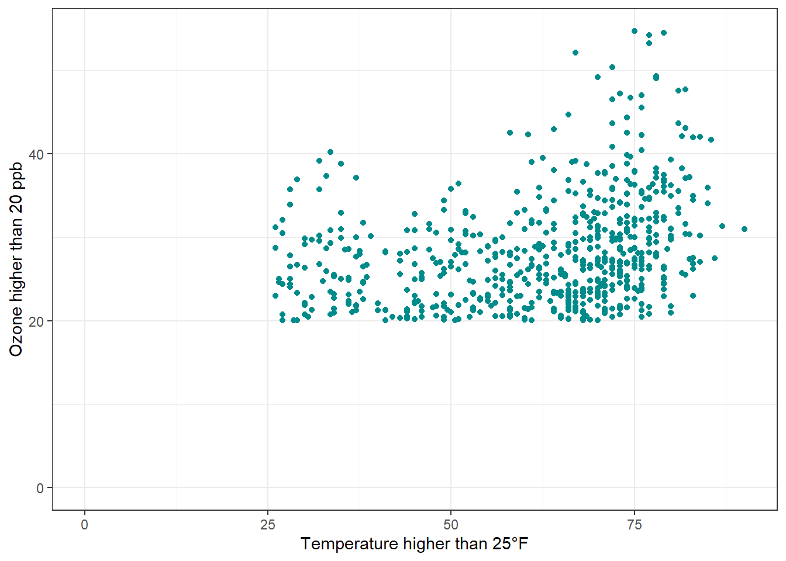
Using coord_cartesian(xlim = c(0,NA), ylim = c(0,NA)) will lead to the same result.
chic_high <- dplyr::filter(chic, temp > 25, o3 > 20)
ggplot(chic_high, aes(x = temp, y = o3)) +
geom_point(color = "darkcyan") +
labs(x = "Temperature higher than 25°F",
y = "Ozone higher than 20 ppb") +
coord_cartesian(xlim = c(0, NA), ylim = c(0, NA))
But we can also force it to literally start at the origin!
ggplot(chic_high, aes(x = temp, y = o3)) +
geom_point(color = "darkcyan") +
labs(x = "Temperature higher than 25°F",
y = "Ozone higher than 20 ppb") +
expand_limits(x = 0, y = 0) +
coord_cartesian(expand = FALSE, clip = "off")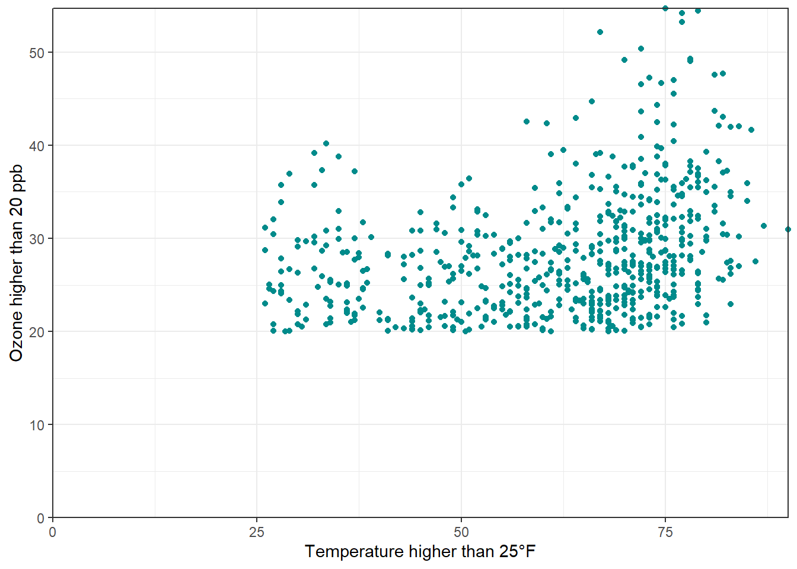
The argument clip = "off" in any coordinate system, always starting with coord_*, allows to draw outside of the panel area. Call it here to make sure that the tick marks at c(0, 0) are not cut.
5.10 Axes with same scaling
Use coord_equal() with default ratio = 1 to ensure the units are equally scaled on the x-axis and on the y-axis. We can set the aspect ratio of a plot with coord_fixed() or coord_equal(). Both use aspect = 1 (1:1) as a default.
ggplot(chic, aes(x = temp, y = temp + rnorm(nrow(chic), sd = 20))) +
geom_point(color = "sienna") +
labs(x = "Temperature (°F)", y = "Temperature (°F) + random noise") +
xlim(c(0, 100)) + ylim(c(0, 150)) +
coord_fixed()Warning: Removed 55 rows containing missing values or values outside the scale range
(`geom_point()`).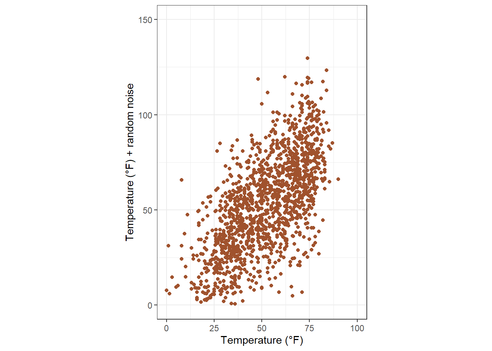
Ratios higher than one make units on the y axis longer than units on the x-axis, and vice versa:
ggplot(chic, aes(x = temp, y = temp + rnorm(nrow(chic), sd = 20))) +
geom_point(color = "sienna") +
labs(x = "Temperature (°F)", y = "Temperature (°F) + random noise") +
xlim(c(0, 100)) + ylim(c(0, 150)) +
coord_fixed(ratio = 1/5)Warning: Removed 49 rows containing missing values or values outside the scale range
(`geom_point()`).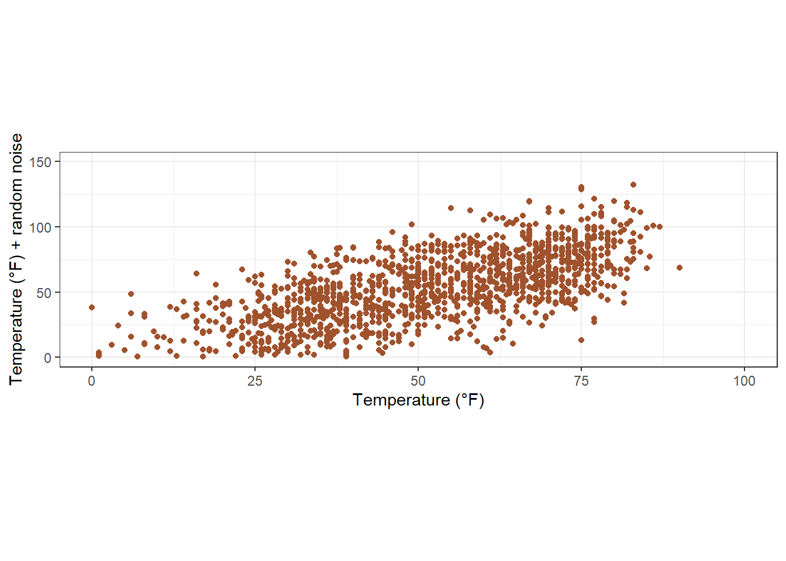
5.11 Use a function to alter labels
In case you want to format (eg adding % sign) without change the data.
6 Titles
6.1 Add a title
We can add a title via ggtitle() function.
ggplot(chic, aes(x = date, y = temp)) +
geom_point(color = "firebrick") +
labs(x = "Year", y = "Temperature (°F)") +
ggtitle("Temperatures in Chicago")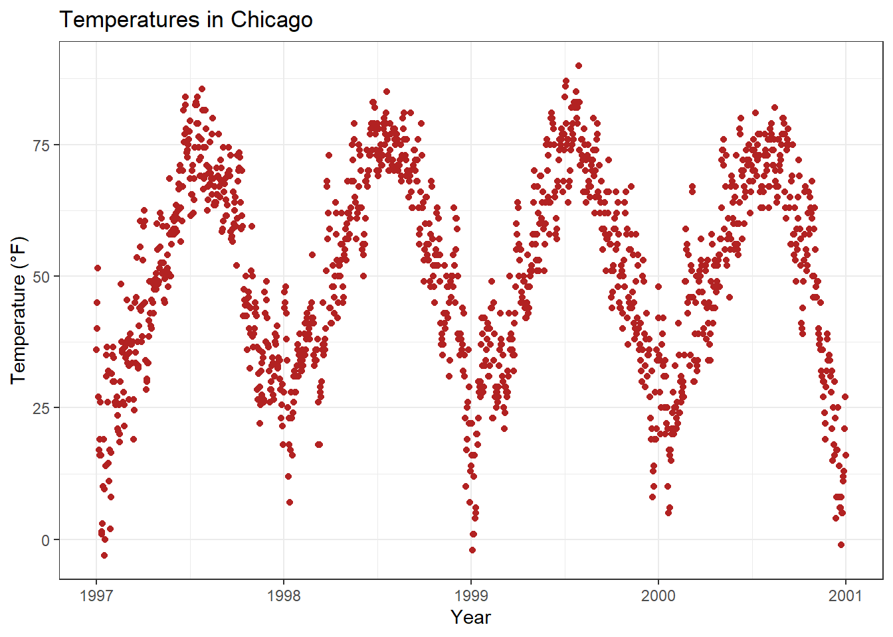
Alternatively, we can use labs(), where we can add serveral arguments ~ metadata of the plot (a sub-title, a caption, and a tag):